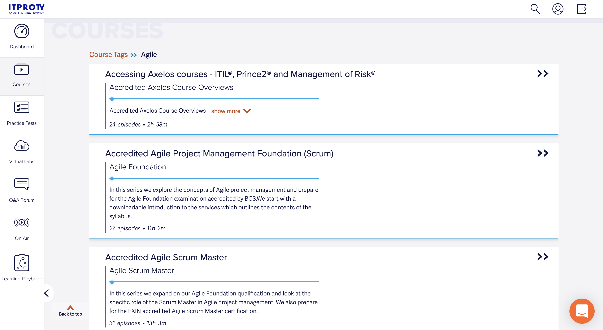
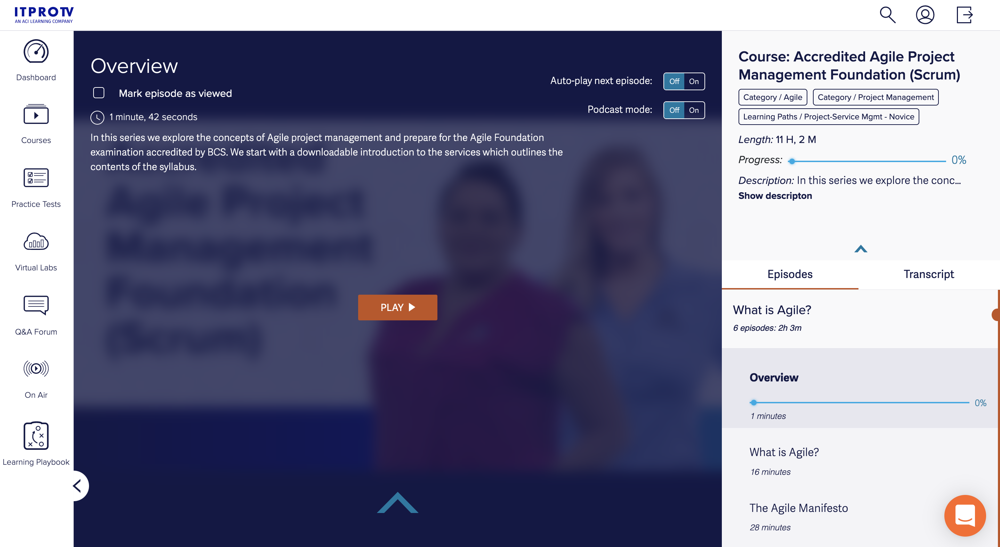
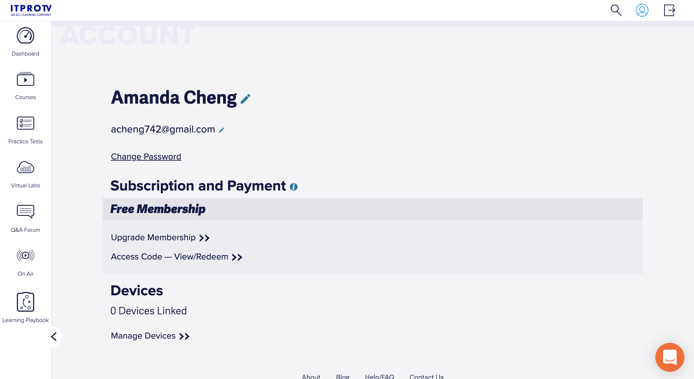
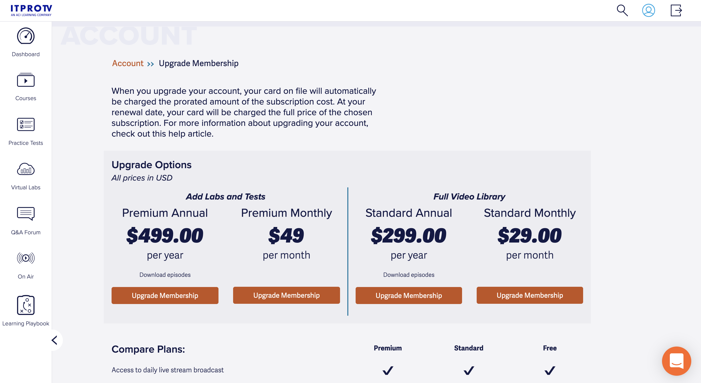
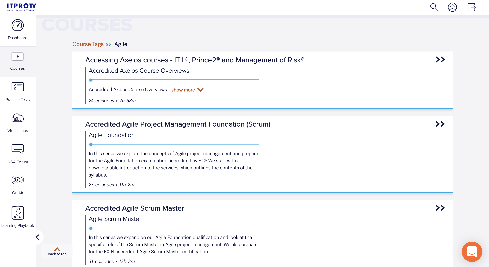
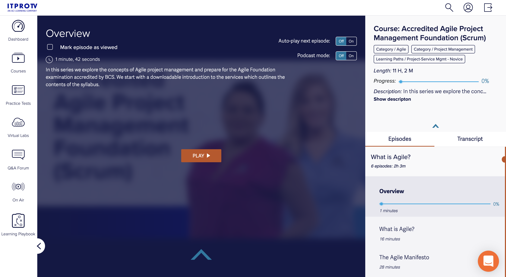
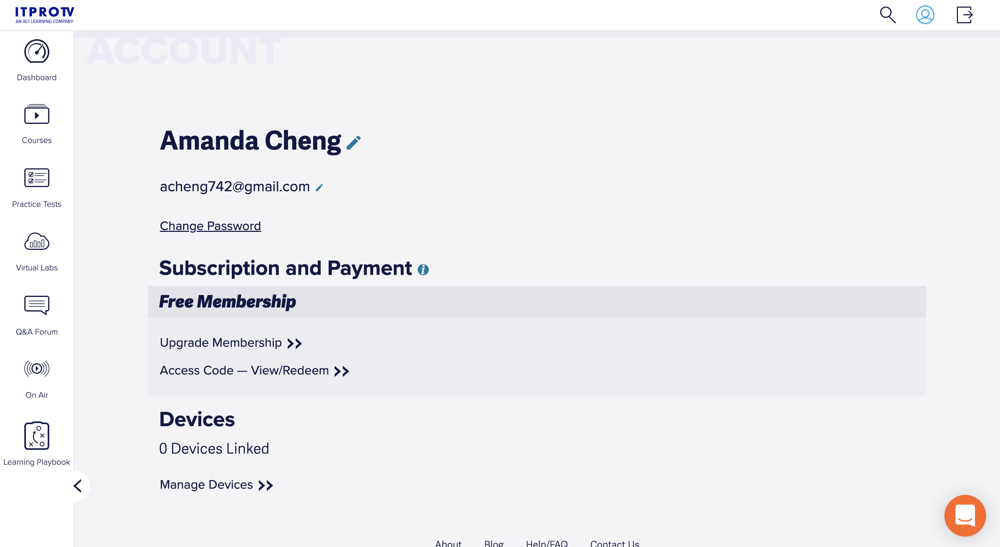
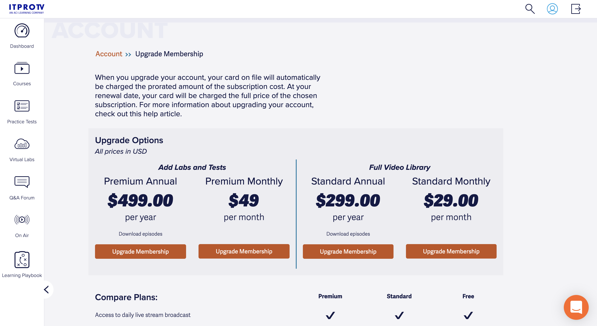

ITProTV Dashboard
The ITProTV Dashboard is a logged-in user experience for free subscribers, paid consumer subscribers, and enterprise subscribers. They can access recently watched course videos, find new courses, view their accomplishments, or access learning resources.
My Role
UX Designer/Developer for a logged-in member dashboard experience from conception to implementation.
Project Goal
To create a new logged-in user experience page with the purpose of creating value through realizing accomplishments, finding new content, and resuming current activities quickly. From the inital dashboard page, users should be able to navigate to resources such as practice tests, virtual labs, or the Q&A Forum. They should also be able to access their account page to update their information or upgrade their subscription. The goal is to keep customer satisfaction high, ultimately leading to customer retention.
Target Audience
Users who have a personal free or paid subscription or users who have a company-paid subscription.
Challenge
Users want to quickly access their most recently watched videos without going through multiple steps. As a new product offering, the challenge was how to visually represent video selections based on their progress, new content released, as well as deciding the elements to highlight in the side navigation bar.
Research Study Details
Connections and interactions of the product were explored to gain a clearer understanding the user's point of view. A user group that focused on 24 long-time paid members were interviewed about their use of ITProTV's product. The study found that the major pain point was the time it took to locate their most recently watched course video.
Findings
- Users need to have the ability to resume a course without having to navigate through multiple steps
- Users are motivated by seeing each course they completed
- Users want to easy access supplemental resources
- This must be accessed from one centralized location
Initial Design Concepts
Usability Testing
KPIs
Time on task: How long does it take for a user to select the last video they watched?
Task success rate: How often do users successfully play a course video?
Search vs navigation: How do users search for a new course to start?
Time on task: How long does it take for a user to find a new course start?
Task success rate: How often do users successfully find course resources such as downloadable files?
Tasks
- Ask user to find the last course video they watched.
- Ask user to play their most recent video they watched.
- Ask user to search for a new course to start learning.
- Ask user to download files associated with the course.
Results
- All users located and played the most recent video they watched in less than a minute. They wanted a way to quickly access their most recent viewings and expressed excitement at the ease of task.
- Most users found new courses by selecting the 'Course' tab in the side navigation bar. Four users used the search icon to found a new course. Those who used the search icon already had a specific course in mind to search for.
- All users were able to locate downloadable files, but some took about two minutes to find them. These users did not instinctively realize it was displayed on the course viewing page.
Final Designs
After launch, users were asked to take a short survey about their experience using the new product. They provided positive feedback and annual retention rate for both B2C/B2B users were at 94%.
 






